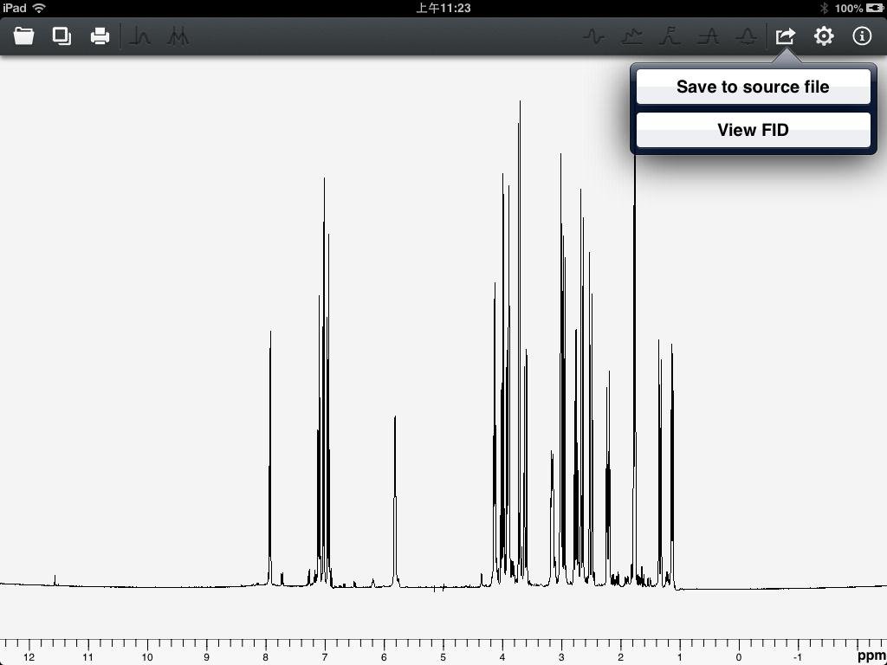
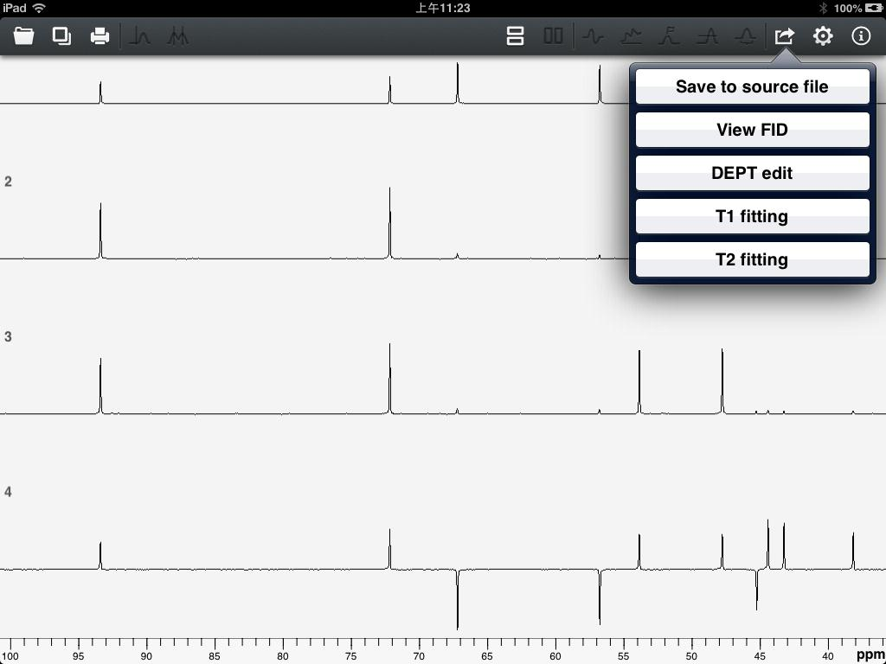
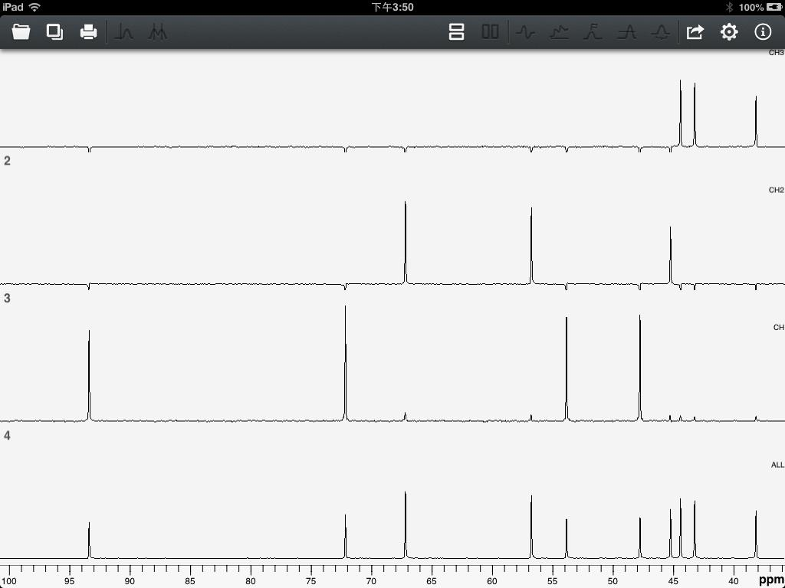
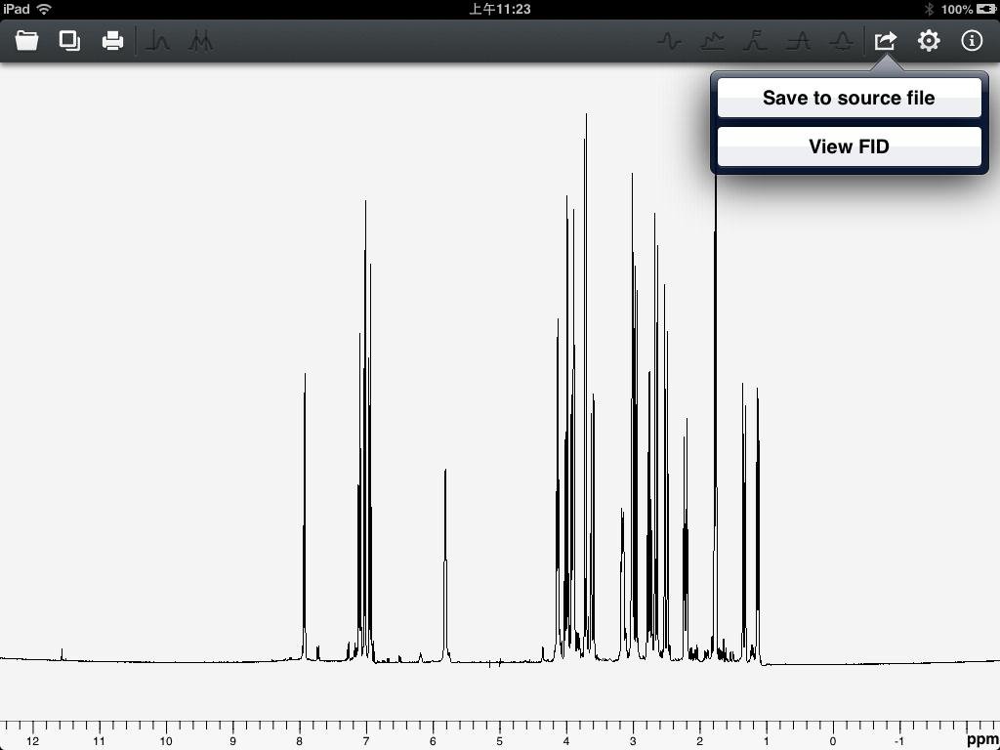
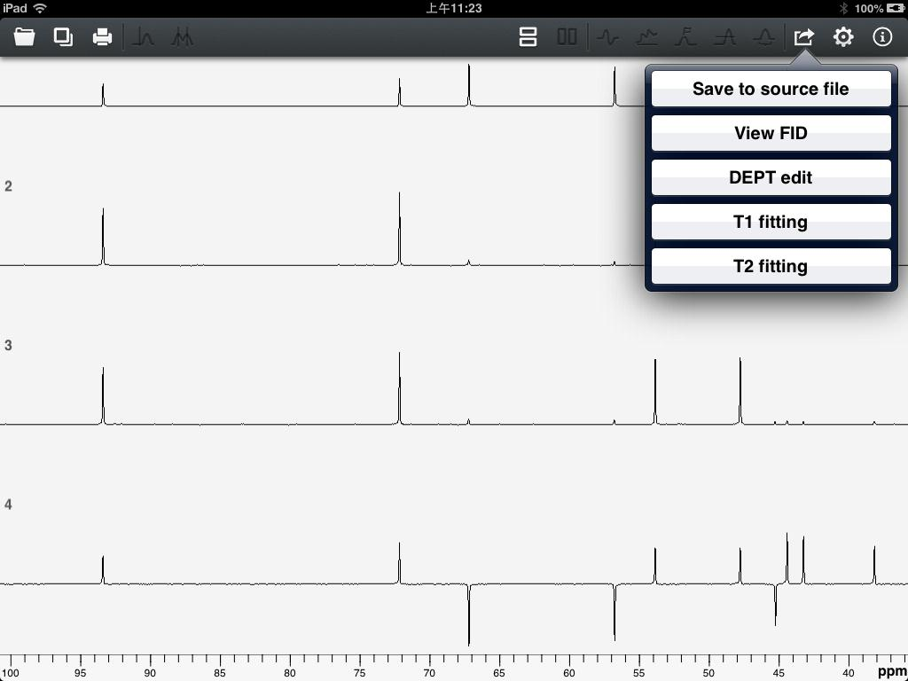
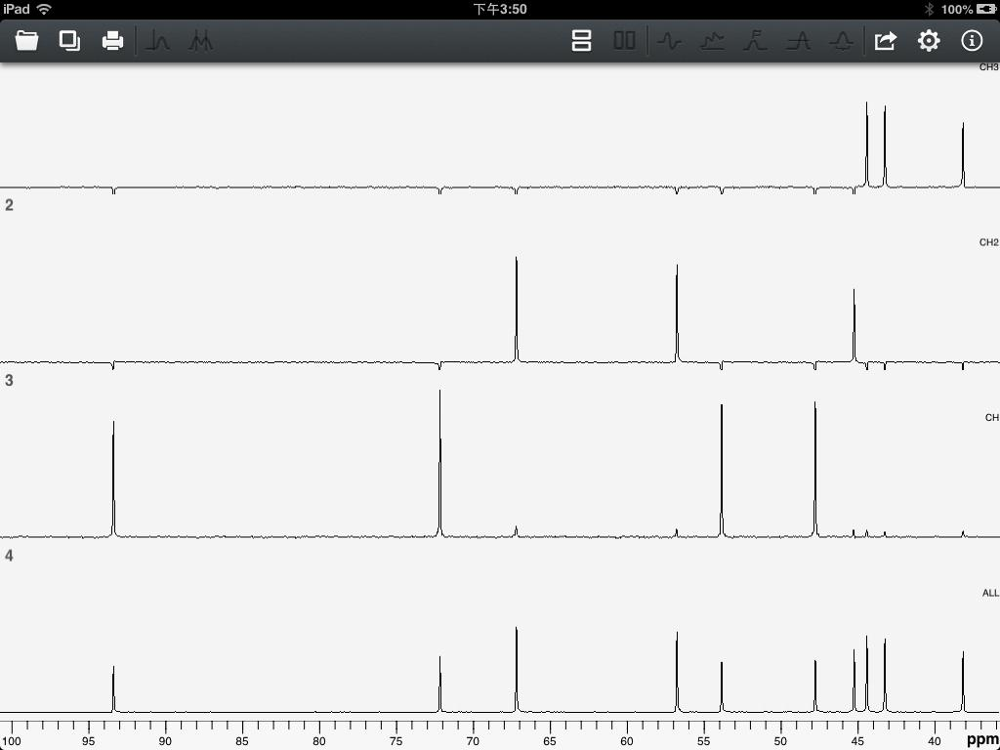

User Guide of Touch NMR
Click the "Actions" button on the upper right corner of main toolbar, actions will pop up according to current data type. For 1D spectrum, the actions will be like figure 17.

Figure 17
For arrayed spectrum, the actions will be like figure 18.

Figure 18
"Save to source file" is to save current processing parameters to the source file. "View FID" is to call out the FID operation. DEPT edit needs three or four 1D spectrums arrayed there. If three, there should be 0.25π, 0.5π and 0.75π. If four, there should be 0.25π, 0.5π, 0.5π and 0.75π. Once DEPT edited, the array spectrums should be like figure 19 with CH3, CH2 and CH listed to the right.

Figure 19
"T1 fitting" and "T2 fitting" need finding some peaks out first. Fittings section has an introductions.

Figure 17
For arrayed spectrum, the actions will be like figure 18.

Figure 18
"Save to source file" is to save current processing parameters to the source file. "View FID" is to call out the FID operation. DEPT edit needs three or four 1D spectrums arrayed there. If three, there should be 0.25π, 0.5π and 0.75π. If four, there should be 0.25π, 0.5π, 0.5π and 0.75π. Once DEPT edited, the array spectrums should be like figure 19 with CH3, CH2 and CH listed to the right.

Figure 19
"T1 fitting" and "T2 fitting" need finding some peaks out first. Fittings section has an introductions.